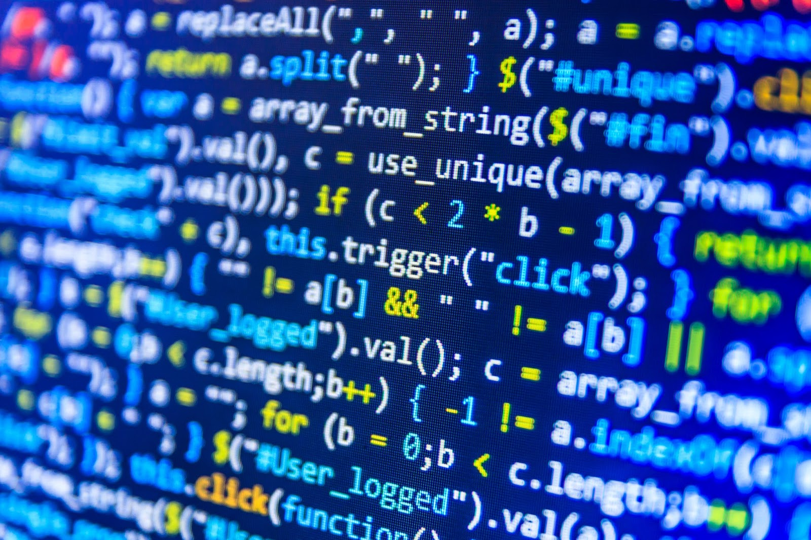
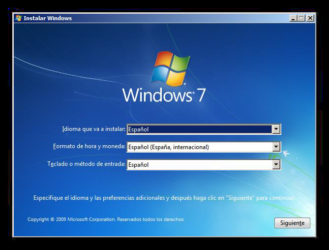

En Byte Haven, somos un equipo apasionado por la tecnología y la educación digital. Nuestro objetivo es proporcionarte recursos educativos accesibles y confiables sobre informática, hardware y software.
Nos dedicamos a construir un futuro más conectado, y nos alegra que formes parte de este proyecto.
La informática es la ciencia que estudia el tratamiento automático de la información mediante dispositivos electrónicos y sistemas computacionales. Incluye tanto el diseño y la construcción de sistemas como la creación de algoritmos y aplicaciones.
Derivados de la Informática
Inteligencia Artificial: Tecnología que simula la inteligencia humana en máquinas, permitiéndoles aprender y tomar decisiones.
Redes y Comunicación: Estudia los sistemas que permiten la conexión y transferencia de datos entre dispositivos.
Seguridad Informática: Abarca métodos para proteger los datos y sistemas contra accesos no autorizados.
Desarrollo de Software: Proceso de creación de aplicaciones y sistemas de software.
Codificación
La codificación es el proceso de escribir código en lenguajes de programación para crear software y aplicaciones. Es fundamental en el desarrollo de software y en otras ramas de la informática.

Partes del Hardware
Componentes Internos
Procesador (CPU):
La CPU, o Unidad Central de Procesamiento, es el "cerebro" del ordenador, encargada de ejecutar todas las instrucciones. Entre las mejores opciones se encuentran el Intel Core i9 y el AMD Ryzen 9.
Disponibles en Amazon, Best Buy y Micro Center.
Memoria RAM:
La RAM almacena datos temporales para aplicaciones en uso, lo que permite un acceso rápido. Marcas reconocidas incluyen Corsair y Kingston.
Disponibles en tiendas como Newegg y Amazon.
Tarjeta Gráfica (GPU):
Una GPU de calidad es crucial para videojuegos y edición de video. Entre las mejores opciones están la NVIDIA GeForce RTX 4090 y la AMD Radeon RX 7900 XTX.
Disponibles en Amazon y tiendas de tecnología.
Placa Madre:
La placa madre es el circuito principal donde se conectan todos los componentes. Marcas como ASUS y Gigabyte son reconocidas por su durabilidad y capacidades avanzadas.
Disponibles en Amazon, Best Buy y Micro Center.
Almacenamiento (HDD y SSD):
Los SSD mejoran el rendimiento, mientras que los HDD ofrecen más capacidad. Marcas populares incluyen Samsung y Western Digital.
Disponibles en Amazon y tiendas de tecnología.
Componentes Externos
Teclado:
Un buen teclado mejora la experiencia de usuario. Razer y Logitech ofrecen teclados mecánicos de alta calidad para gaming, mientras que Microsoft y Logitech son ideales para oficina.
Monitor:
Monitores de alta resolución como el LG UltraGear y el Samsung Odyssey son ideales para gaming y diseño gráfico.
Ratón (Mouse):
Ratones de alta precisión de marcas como Logitech y Razer son recomendados para tareas de diseño o gaming.
Impresora:
Las impresoras de HP y Canon son ideales para oficina y hogar, con modelos láser y de inyección de tinta.
Software
El software es el conjunto de programas que permiten ejecutar diferentes tareas en un dispositivo. A continuación, se detalla más sobre aplicaciones y sistemas operativos.
Aplicaciones
Las aplicaciones son programas diseñados para realizar tareas específicas. Entre los pioneros en el desarrollo de aplicaciones están compañías como Microsoft, Apple y Google.
Sistemas Operativos
El sistema operativo es el software base que administra el hardware y permite la ejecución de aplicaciones. Ejemplos incluyen Windows, macOS y Linux.
Programas Destacados
Microsoft Visual Studio: IDE de desarrollo para crear aplicaciones en múltiples lenguajes. Popular entre desarrolladores de software.
Visual Studio Code: Editor de código ligero y potente, también de Microsoft, con soporte para extensiones y múltiples lenguajes.
Instalación de Software
El procedimiento para instalar software incluye descargar el programa, ejecutar el instalador, seguir las instrucciones y reiniciar si es necesario.

Arduino
Arduino es una plataforma de electrónica abierta para la creación de prototipos basada en software y hardware libre, flexible y fácil de usar. La placa Arduino está basada en un microcontrolador ATMEL.
Arduino puede interactuar con su entorno mediante sus pines de entrada y salida, utilizando una amplia gama de sensores, luces, motores y otros actuadores.
Partes del Prototipo de Auto Park
Arduino Uno: La placa principal utilizada en este proyecto.
Sensor Ultrasonido HCSR04: Para detectar distancias y obstáculos.
Protoboard: Permite conectar y probar componentes sin necesidad de soldadura.
Servo Motor SG90: Actuador que permite movimiento controlado.
Jumpers 20cm: Cables necesarios para realizar las conexiones.
Análisis del Prototipo
Estructura Física
El prototipo incluye un chasis base donde se montan el Arduino Uno, el sensor de ultrasonido y el servo motor, con conexiones realizadas mediante un protoboard y cables jumper.
Procesamiento de Datos
Para programar el Arduino, se utilizó el lenguaje C/C++ a través de la plataforma de desarrollo INO. El código fue desarrollado combinando conocimientos básicos de programación con investigaciones y pruebas continuas para asegurar un funcionamiento óptimo.
Familia de Arduino
Arduino Uno
Arduino Fio
Arduino Pro
Arduino Nano
Arduino Mini
Arduino Bluetooth
Arduino Leonardo
Arduino Serial
Arduino Mega ADK
Arduino Mega 2560
Objetivos del Prototipo
Objetivo Nro 1: Mostrar cómo la informática puede ayudar a mejorar el flujo de tránsito.
Objetivo Nro 2: Dar a conocer las diferentes funciones del Arduino.
Objetivo Nro 3: Incentivar a los interesados en la informática a crear sus propios prototipos.
Sobre Nosotros
Bienvenidos a Byte Haven, un equipo apasionado por la tecnología y la educación digital. Nos dedicamos a crear contenido que te ayude a comprender de manera clara y accesible los conceptos clave de la informática, el hardware y el software.
¿Quiénes Somos?
Somos un grupo de estudiantes apasionados por la informática y la tecnología, con la misión de compartir nuestros conocimientos y contribuir al desarrollo de una sociedad digitalmente alfabetizada.
Nuestra Finalidad
Este proyecto fue creado para ofrecer recursos educativos sobre tecnología y computación. A través de Byte Haven, buscamos brindar acceso a información confiable y adaptada para todas las personas.
Nuestro Objetivo
Queremos inspirar a las personas a explorar mas sobre la tecnología y abrirse a nuevas oportunidades en el mundo digital.
Únete a Nosotros
Si compartes nuestra pasión por la tecnología y el aprendizaje, ¡únete a este gran equipo de estudiantes! Estamos aquí para crecer juntos y construir un futuro más conectado.